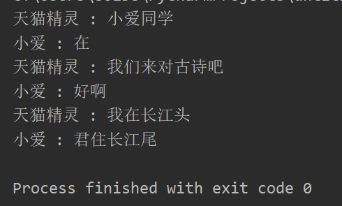

(1)Lock
import threading
from threading import Lock
total = 0
lock = Lock()
def add():
global total
global local
for i in range(100000):
lock.acquire()
# lock.acquire() #如果再加把锁会产生死锁
total += 1
lock.release()
def desc():
global total
global local
for i in range(100000):
lock.acquire() #获取锁
total -= 1
lock.release() #释放锁
thread1 = threading.Thread(target=add)
thread2 = threading.Thread(target=desc)
thread1.start()
thread2.start()
thread1.join()
thread2.join()
print(total) #0（2）RLock
RLock:在同一个线程里面，可以连续多次调用acquire,一定要注意acquire和release的次数相等
import threading
from threading import Lock,RLock
total = 0
lock = RLock()
def add():
global total
global local
for i in range(100000):
#用RLock在同一线程里面，可以多次调用acquire，不会产生死锁
lock.acquire()
lock.acquire()
total += 1
#release的次数和acquire的次数相等
lock.release()
lock.release()
def desc():
global total
global local
for i in range(100000):
lock.acquire() #获取锁
total -= 1
lock.release() #释放锁
thread1 = threading.Thread(target=add)
thread2 = threading.Thread(target=desc)
thread1.start()
thread2.start()
thread1.join()
thread2.join()
print(total) #0使用condition模拟对话
import threading
from threading import Condition
#通过condition，完成协同读诗
class XiaoAi(threading.Thread):
def __init__(self,cond):
super().__init__(name='小爱')
self.cond = cond
def run(self):
with self.cond:
#等待
self.cond.wait()
print("{} : 在".format(self.name))
#通知
self.cond.notify()
self.cond.wait()
print("{} : 好啊".format(self.name))
self.cond.notify()
self.cond.wait()
print("{} : 君住长江尾".format(self.name))
self.cond.notify()
class TianMao(threading.Thread):
def __init__(self,cond):
super().__init__(name="天猫精灵")
self.cond = cond
def run(self):
with self.cond:
print("{} : 小爱同学".format(self.name))
self.cond.notify()
self.cond.wait()
print("{} : 我们来对古诗吧".format(self.name))
self.cond.notify()
self.cond.wait()
print("{} : 我在长江头".format(self.name))
self.cond.notify()
self.cond.wait()
if __name__ == '__main__':
cond = threading.Condition()
xiaoai = XiaoAi(cond)
tianmao = TianMao(cond)
xiaoai.start()
tianmao.start()结果：

控制线程并发数量
#samaphore是用于控制进入数量的锁
import threading
import time
class htmlSpider(threading.Thread):
def __init__(self,url,sem):
super().__init__()
self.url = url
self.sem = sem
def run(self):
time.sleep(2)
print("got html text success!")
self.sem.release() #释放锁
class UrlProducer(threading.Thread):
def __init__(self, sem):
super().__init__()
self.sem = sem
def run(self):
for i in range(20):
self.sem.acquire() #加锁
html_htread = htmlSpider("baidu.com/{}".format(i), self.sem)
html_htread.start()
if __name__ == '__main__':
#控制线程并发数量为3
sem = threading.Semaphore(3)
url_producer = UrlProducer(sem)
url_producer.start()线程池
from concurrent.futures import ThreadPoolExecutor, as_completed
import time
#为什么要线程池
#主线程中可以获取某一个线程的状态或者某一个任务的状态，以及返回值
#当一个线程完成的时候，主线程立马知道
#futures可以让多线程和多进程编码接口一致
def get_html(times):
time.sleep(times)
print("get page {} success".format(times))
return times
executor = ThreadPoolExecutor(max_workers=2)
#通过submit提交执行的函数到线程池中，sumbit是立即返回
task1 = executor.submit(get_html, (3)) #函数和参数
#done方法用于判定某个任务是否完成
print(task1.done()) #False
time.sleep(4)
print(task1.done()) #True
#result方法查看task函数执行的结构
print(task1.result()) #3用as_completed获取任务结束的返回
from concurrent.futures import ThreadPoolExecutor, as_completed
import time
#为什么要线程池
#主线程中可以获取某一个线程的状态或者某一个任务的状态，以及返回值
#当一个线程完成的时候，主线程立马知道
#futures可以让多线程和多进程编码接口一致
# def get_html(times):
# time.sleep(times)
# print("get page {} success".format(times))
# return times
#
# executor = ThreadPoolExecutor(max_workers=2)
#
# #通过submit提交执行的函数到线程池中，sumbit是立即返回
# task1 = executor.submit(get_html, (3)) #函数和参数
#
# #done方法用于判定某个任务是否完成
# print(task1.done()) #False
# time.sleep(4)
# print(task1.done()) #True
# #result方法查看task函数执行的结构
# print(task1.result()) #3
def get_html(times):
time.sleep(times)
print("get page {} success".format(times))
return times
executor = ThreadPoolExecutor(max_workers=2)
#获取已经成功的task的返回
urls = [3,2,4]
all_task = [executor.submit(get_html, (url)) for url in urls]
for future in as_completed(all_task):
data = future.result()
print(data) #已经成功的task函数的returnQueue
import time
from multiprocessing import Process, Queue
def producer(queue):
queue.put("a")
time.sleep(2)
def consumer(queue):
time.sleep(2)
data = queue.get()
print(data)
if __name__ == '__main__':
queue = Queue(10)
my_producer = Process(target=producer, args=(queue,))
my_consumer = Process(target=consumer, args=(queue,))
my_producer.start()
my_consumer.start()
my_producer.join()
my_consumer.join()Manger
import time
from multiprocessing import Process, Queue, Manager,Pool
def producer(queue):
queue.put("a")
time.sleep(2)
def consumer(queue):
time.sleep(2)
data = queue.get()
print(data)
if __name__ == '__main__':
#pool中的进程间通信需要使用manger中的queue
queue = Manager().Queue(10)
pool = Pool(2) #创建进程池
pool.apply_async(producer, args=(queue, ))
pool.apply_async(consumer, args=(queue, ))
pool.close()
pool.join()pipe实现进程间通信（只能两个进程之间）
#Pipe进程间通信
from multiprocessing import Process, Pipe
def producer(pipe):
pipe.send("derek")
def consumer(pipe):
print(pipe.recv())
if __name__ == '__main__':
receive_pipe, send_pipe = Pipe()
my_producer = Process(target=producer, args=(send_pipe, ))
my_consumer = Process(target=consumer, args=(receive_pipe, ))
my_producer.start()
my_consumer.start()
my_producer.join()
my_producer.join()